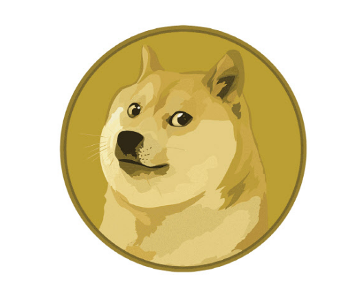

도지의 본래의 뜻은 비트코인의 종류중 하나인
도지 코인을 가리키는 말이다.
이를 다른 사람들은 지금의 상태는 미약하지만
훗날에 그 가치가 폭등하여 이익이 폭발하는 것을 기대하는 다양한 분야에서 쓰고는 한다.
한 가지 예시를 들자면 주식에서 현재 가장 저점을 찍고 가치가 없어보이는 회사가 훗날 주식이 오르기를 기대하며 사는 행위를 도지가 떡상하기를 기대한다라고 할 수 있다.
하지만 우리집에서 도지를 말하는 의미는 조금 다르다.
